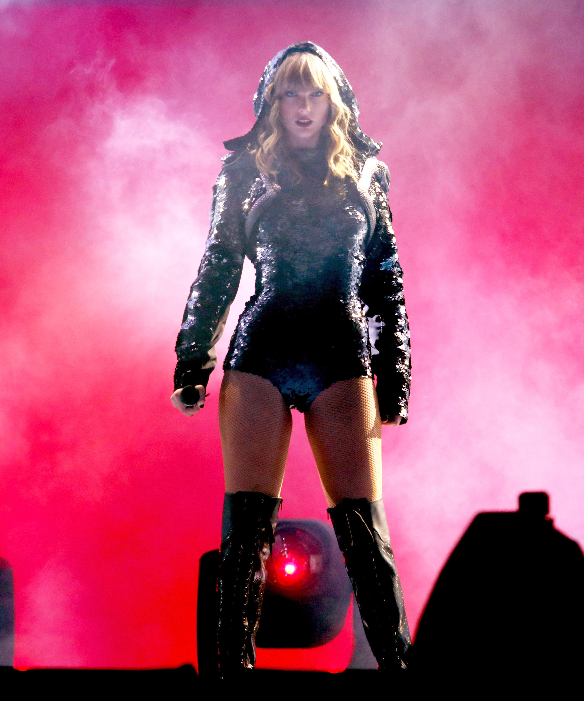

Singles: Look What You Made Me Do, ...Ready For It?, End Game, New Year's Day, Delicate, Getaway Car
Genre: Pop
While Reputation did its job of re-establishing Taylor Swift's good reputation to the media and general public, it did not comercially perform as well as her other albums. Reputation is primarily an electropop album. It incorporates a heavy, maximalist electronic production with EDM instrumentation and rhythms. Today, Reputation probably Swift's most polarizing album, with most critics not being too fond of it, while many of her fans believe that it is her best album to date.
